Bankrendszer
Waikiki pénzügyi rendszere a szuverén állami pénz elvén alapul. A pénzt kizárólag a Nemzeti Bank bocsáthatja ki, a betétekre állami garancia vonatkozik, az inflációs cél pedig nulla százalék. Az ország négyezer tonna aranytartalékot is őriz.
A Pénzügyi Rendszer Három Pillére
Waikiki pénzügyi rendszere szigorúan elválasztja az állami pénzkibocsátást a kereskedelmi hitelnyújtástól és a tőkepiaci befektetésektől. A rendszer célja a magánpénzteremtésből fakadó pénzügyi válságok és bankcsődök megelőzése.

Waikiki Nemzeti Bankja
A Nemzeti Bank kezeli az állami befektetéseket és költségvetési tartalékokat, kizárólagos joggal bocsát ki pénzt, WUD-alapú folyószámlákat vezet, és az alapkamatokkal szabályozza az inflációt. Továbbá közvetlen, 5 éves lejáratú, speciális kamatozású hiteleket is nyújt a stratégiai jelentőségű óriáscégeknek.
- MonopóliumKizárólagos állami pénzteremtés
- Betétvédelem100%-os korlátlan állami kezesség
- Vállalati hitelezésMin. 1 milliárd WUD stratégiai forrás
Kereskedelmi Bankok
A kereskedelmi bankok lekötött betéteket gyűjtenek, és ezekből hiteleket nyújtanak. A 2009-es banktörvény értelmében a kihelyezett hitelek legalább 50%-át saját tőkéből kell fedezniük, a betétek összege nem haladhatja meg a saját tőkét, és lejáratuknak fedeznie kell a kihelyezett hitelek lejáratát.
- TőkekövetelményLegalább 50% saját tőkefedezet
- HitelkonstrukciókCsak szigorúan szabályozott típusok
- Vezető intézményekInternational Credit Bank, Bank of Waikiki, Nova Aurelia Central Bank
Befektetési Bankok és Alapok
A befektetési bankok magasabb hozamú értékpapírokkal és származtatott termékekkel kereskednek. Betéteket nem gyűjthetnek; forrásaikat kötvénykibocsátásból és befektetési jegyekből szerzik. A befektetési kockázatot így közvetlenül a befektetők viselik.
- ForrásszerkezetKizárólag kötvények és befektetési jegyek
- TevékenységRészvénykibocsátások, vagyonkezelés
- Vezető csoportokChease Investment Group, Walker Finance & Insurance Holding
Nemzeti Valuta és Monetáris Politika
Waikiki 2009-től teljes állami pénzrendszert vezetett be. Az állami pénzkibocsátási monopólium célja a pénzpiac stabilitásának és a bankrendszer ellenálló képességének megőrzése.
A Waikiki Dollár (WUD)
Chease Young javaslatára a Nemzeti Bank 2000-ben bevezette a Waikiki dollárt. Az ország jelentős kőolaj- és technológiai exportja miatt külföldön is rendkívül keresetté vált, így a Waikiki dollár árfolyama a kezdeti 1:1-es szintről 2022-re 2,5 amerikai dollár fölé emelkedett.
Állami Pénzteremtés és Tartalék
A Nemzeti Bank Monetáris Tanácsa havonta határoz a forgalomban lévő pénz mennyiségéről. A pénzkibocsátásból származó bevételt értékpapírokba fektetik, vállalati hitelekre fordítják, vagy átutalják az állami költségvetésbe és a vagyonalapba.
A Világ Második Legnagyobb Aranytartaléka
Waikiki az Egyesült Államok után a világ második legnagyobb fizikai aranytartalékával büszkélkedhet. A mintegy 4 000 tonnányi nemesfém a devizatartalék harmadát teszi ki, és értéke 2021-ben átlépte a 100 milliárd WUD-t, stabil fedezetet nyújtva a nemzetközi válságok idején.
Ingyenes Állami Számlavezetés
A Nemzeti Bank minden állampolgár és hazai vállalat számára díjmentes folyószámlát és értékpapírszámlát vezet. A számla fenntartása, az összes átutalás és a bankkártya-használat teljesen ingyenes, a lakossági betétek pedig azonos kedvező jegybanki kamatozásban részesülnek, mint a vállalati számlák.
Kamatok és Árstabilitás
A Nemzeti Bank kettős alapkamatrendszert alkalmaz, és a világ legszigorúbb antiinflációs politikáját követve védi a lakosság vásárlóerejét és a megtakarítások értékét.

Betéti Alapkamat
A betéti alapkamat a WUD-ban tartott megtakarításokra fizetett hozam, amelyet naponta írnak jóvá a lakossági és vállalati számlákon. A betétekre az állam korlátlan garanciát vállal, így a megtakarítás teljesen kockázatmentes.
- JóváírásNapi automatikus kamatfizetés
- Kockázati szintTeljesen kockázatmentes állami garancia
- JogosultságMinden polgár és vállalat
Hitel Alapkamat
A hitelkamatláb alapján a Nemzeti Bank ötéves futamidejű közvetlen kölcsönöket nyújt a legmagasabb minősítésű vállalatoknak. A cégeket 5 főkategóriában és 3-3 alkategóriában értékelik a pénzügyi stabilitás, fenntarthatóság és társadalmi hasznosság alapján.
- Futamidő5 éves közvetlen állami hitel
- Minimális hitelösszeg1 milliárd WUD keretösszeg
- Minősítési szempontokPénzügyi stabilitás és ESG mutatók
0%-os Inflációs Célkitűzés
A Nemzeti Bank megalakulása óta a nulla százalékos inflációs cél elérésére törekszik. A toleranciasáv 2012-től ±1%-ra szűkült. Egyedülálló módon több periódusú visszamenőleges korrekciót alkalmaznak, így ha valamelyik évben eltérés történik, a jegybank a következő években ellensúlyozza azt.
- CélértékSzigorú 0%-os éves infláció
- ToleranciasávSzűk ±1%-os intervallum 2012 óta
- Korrekciós mechanizmusTöbb periódusú mozgóátlag
Reálárak és Jóléti Növekedés
Miközben a belföldi árak húsz év alatt mindössze 2%-kal nőttek WUD-ban, az árfolyam erősödése miatt dollárban számolva megduplázódtak. A bérek 2020-ra WUD-ban négyszeresükre, dollárban pedig tízszeresükre emelkedtek.
- WUD áremelkedés~2% összesen 20 év alatt
- Bérek növekedése (WUD)Négyszeres reálbér-bővülés
- Bérek növekedése (USD)Tízszeres gyarapodás 2020-ra
A Waikiki Tőzsde és Tőkepiacok
A tőkepiac összekapcsolja a lakossági megtakarításokat a vállalati beruházásokkal. A Nemzeti Bank likviditást biztosít, a digitális kereskedés pedig díjmentes.
Díjmentes Lakossági Kereskedés
A kormány a lakossági megtakarításokat a vállalati forrásigényekkel összekapcsoló rendszert hozott létre. Ennek keretében minden állampolgár közvetítői díj nélkül kereskedhet részvényekkel, kötvényekkel és valutákkal.
- Kereskedési felületDigitális portál és mobil hozzáférés
- Tranzakciós költségek0% jutalék
- Likviditás-támogatásJegybanki árjegyzői garancia
Gazdag Értékpapír-Kínálat
A Waikiki Tőzsdén (WSE) több mint 7000 vállalat részvénye és 18 000 különféle kötvény közül választhatnak a befektetők. A robotikai, repülőgépgyártási, gyógyszerészeti és energetikai cégek mellett a legnagyobb nemzetközi vállalatok papírjai is elérhetők.
- Részvénykínálat7 000+ jegyzett vállalat
- Kötvénykínálat18 000+ hitelviszonyt megtestesítő papír
- Fő ágazatokCsúcstechnológia, űripar, zöldenergia
Nemzeti Örökjáradék Államkötvény
Waikiki kormánya egyedülálló állampapírt bocsát ki, amely teljesen kockázatmentesen, lejárat nélkül, havi fix összegű kifizetést biztosít a befektetőknek. A kötvényt belföldi és külföldi vásárlók egyaránt jegyezhetik 1 000 WUD névértékű csomagokban, 1,2%-os garantált kamattal.
- Névérték1 000 WUD egységcsomagok
- Kamat1,2% fix, garantált éves hozam
- KifizetésLejárat nélküli havi hozamjövedelem
Nyilvános ESG Vállalati Minősítés
A piaci szereplők tájékoztatása érdekében a Nemzeti Bank rendszeresen felülvizsgálja és nyilvánosan minősíti a tőzsdén szereplő vállalatokat. A minősítés a pénzügyi mutatók mellett a környezeti hatásokat és a társadalmi felelősségvállalást is figyelembe veszi.
- Minősítési skála5 főkategória és 3-3 alkategória
- Értékelési szempontokStabilitás, fenntarthatóság és társadalom
- KözzétételNegyedéves transzparens jegyzék